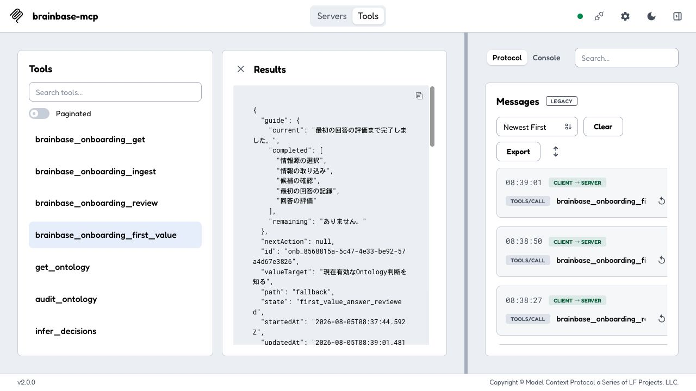
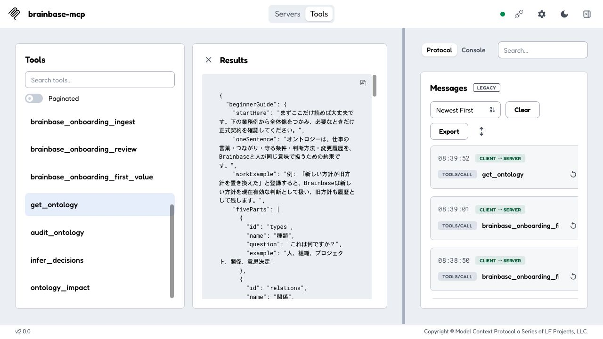

初心者UX：20%到達までの再評価
性格の異なる32ペルソナに、同じ2タスクの実画面証拠をそれぞれの条件で適用した合成評価です。
10/32
安心して完了31.3%
到達率7/32
最低ライン22/32
支援技術が未検証結論
最低ラインの20%は達成しました。 前回の0人から、今回は10人（31.25%）が2つの必須タスクを重大な迷いなく完了できる判定です。
ただし全体収束ではありません。スクリーンリーダーまたは動きの抑制が必要な22人は実環境証拠がないため、成功扱いにしていません。
ラウンドで出た意見と採用した修正
- 次に何をするかが長いJSONの後ろにある → guide と nextAction を結果先頭へ移動。
- 中断すると現在地を読み直す必要がある → 現在地・完了済み・残りの3点要約を追加。
- 実行前に何が変わるか、戻せるか分からない → 変更内容・可逆性・復旧方法を各次操作に追加。
- 5要素の英語名だけでは自分の仕事に結びつかない → 日本語の方針置き換え例、5要素の日本語名、影響確認と版更新への導線を追加。
前回との比較
| 評価 | 安心して完了 | 摩擦あり | 未検証 |
|---|---|---|---|
| 前回 | 0 | 10 | 22 |
| 今回 | 10 | 0 | 22 |
ペルソナごとの感じ方
1人1視点ではなく、各人の役割・経験・時間圧・中断・確認傾向を組み合わせた反応です。
| ID | 役割 | 性格・状況 | 今回どう感じるか | 判定 |
|---|---|---|---|---|
| P-101-G0 | 初回利用者 | 業務経験中程度・技術習熟度中・時間圧高・集中作業・速度重視・音声＋キーボード・動きの抑制が必要 | 初日に最短で価値を実感し、使い続けるか判断したい個人利用者。動きの抑制設定を有効にした実操作証拠がないため、成功扱いにしない。 | 未検証 |
| P-102-G0 | 初回利用者 | 業務経験者・技術習熟度高・時間圧低・集中作業・確認重視・キーボード・スクリーンリーダー | 導入前にデータの意味と安全性を自分で検証したい慎重な個人利用者。スクリーンリーダーを有効にした実操作証拠がないため、成功扱いにしない。 | 未検証 |
| P-103-G0 | 初回利用者 | 業務初心者・技術習熟度低・時間圧高・集中作業・速度重視・音声＋キーボード・支援技術指定なし | 専門用語に自信がなく、間違えて壊さないかを心配する初学者。最初に現在地と次の一手が見えるため、詳細JSONを理解する前でも進める。時間に追われても結果先頭だけで次の操作を判断できる。速度を優先する性格に対し、短いラベルと次のツールが先頭にある。連続操作では案内どおり迷わず完了できる。 | 安心して完了 |
| P-104-G0 | 初回利用者 | 業務経験中程度・技術習熟度中・時間圧低・集中作業・確認重視・キーボード・動きの抑制が必要 | 例を一つずつ確認し、納得してから先へ進む学習型の利用者。動きの抑制設定を有効にした実操作証拠がないため、成功扱いにしない。 | 未検証 |
| P-105-G0 | 初回利用者 | 業務経験者・技術習熟度高・時間圧高・集中作業・速度重視・音声＋キーボード・スクリーンリーダー | 仕組みは理解できるが、説明を読む時間を最小化したい熟練利用者。スクリーンリーダーを有効にした実操作証拠がないため、成功扱いにしない。 | 未検証 |
| P-106-G0 | 初回利用者 | 業務初心者・技術習熟度低・時間圧低・集中作業・確認重視・キーボード・支援技術指定なし | 操作前に正解例を見て、自分の入力と照合したい慎重な初心者。最初に現在地と次の一手が見えるため、詳細JSONを理解する前でも進める。時間をかけたい場合は日本語例の後から正式契約まで確認できる。確認してから進む性格に対し、何が変わるかと戻し方が先に示される。連続操作では案内どおり迷わず完了できる。 | 安心して完了 |
| P-107-G0 | 初回利用者 | 業務経験中程度・技術習熟度中・時間圧高・集中作業・速度重視・音声＋キーボード・動きの抑制が必要 | 移動や会話の合間に、短い操作で最初の成果まで進めたい利用者。動きの抑制設定を有効にした実操作証拠がないため、成功扱いにしない。 | 未検証 |
| P-108-G0 | 初回利用者 | 業務経験者・技術習熟度高・時間圧低・集中作業・確認重視・キーボード・スクリーンリーダー | 後から経緯を監査できることを確かめてから利用したい個人利用者。スクリーンリーダーを有効にした実操作証拠がないため、成功扱いにしない。 | 未検証 |
| P-201-G0 | チーム運用担当 | 業務経験者・技術習熟度低・時間圧高・頻繁に中断・確認重視・音声＋キーボード・スクリーンリーダー | 問い合わせ対応の合間に、チーム全体の進行を止めず運用したい担当者。スクリーンリーダーを有効にした実操作証拠がないため、成功扱いにしない。 | 未検証 |
| P-202-G0 | チーム運用担当 | 業務初心者・技術習熟度中・時間圧低・頻繁に中断・速度重視・キーボード・支援技術指定なし | 引き継いだばかりで、まず通常業務を滞りなく回したい新任担当者。中断後も完了済みと残りを再構築でき、引き継ぎ時の取り違えが減る。時間をかけたい場合は日本語例の後から正式契約まで確認できる。速度を優先する性格に対し、短いラベルと次のツールが先頭にある。割り込み後も3項目の要約で再開できる。 | 安心して完了 |
| P-203-G0 | チーム運用担当 | 業務経験中程度・技術習熟度高・時間圧高・頻繁に中断・確認重視・音声＋キーボード・動きの抑制が必要 | 複数案件を並行しながら、誤操作を出さずに素早く処理したい担当者。動きの抑制設定を有効にした実操作証拠がないため、成功扱いにしない。 | 未検証 |
| P-204-G0 | チーム運用担当 | 業務経験者・技術習熟度低・時間圧低・頻繁に中断・速度重視・キーボード・スクリーンリーダー | 技術詳細より、チームの誰でも同じ手順を再現できることを重視する担当者。スクリーンリーダーを有効にした実操作証拠がないため、成功扱いにしない。 | 未検証 |
| P-205-G0 | チーム運用担当 | 業務初心者・技術習熟度中・時間圧高・頻繁に中断・確認重視・音声＋キーボード・支援技術指定なし | 中断後も承認状況を取り違えず、安心して作業を再開したい担当者。中断後も完了済みと残りを再構築でき、引き継ぎ時の取り違えが減る。時間に追われても結果先頭だけで次の操作を判断できる。確認してから進む性格に対し、何が変わるかと戻し方が先に示される。割り込み後も3項目の要約で再開できる。 | 安心して完了 |
| P-206-G0 | チーム運用担当 | 業務経験中程度・技術習熟度高・時間圧低・頻繁に中断・速度重視・キーボード・動きの抑制が必要 | 構造を理解したうえで、反復作業をできるだけ短縮したい担当者。動きの抑制設定を有効にした実操作証拠がないため、成功扱いにしない。 | 未検証 |
| P-207-G0 | チーム運用担当 | 業務経験者・技術習熟度低・時間圧高・頻繁に中断・確認重視・音声＋キーボード・スクリーンリーダー | 急な割り込み中でも、確認漏れによるチーム事故だけは避けたい担当者。スクリーンリーダーを有効にした実操作証拠がないため、成功扱いにしない。 | 未検証 |
| P-208-G0 | チーム運用担当 | 業務初心者・技術習熟度中・時間圧低・頻繁に中断・速度重視・キーボード・支援技術指定なし | 新任でもマニュアルを読み込まず、画面の案内だけで運用したい担当者。中断後も完了済みと残りを再構築でき、引き継ぎ時の取り違えが減る。時間をかけたい場合は日本語例の後から正式契約まで確認できる。速度を優先する性格に対し、短いラベルと次のツールが先頭にある。割り込み後も3項目の要約で再開できる。 | 安心して完了 |
| P-301-G0 | オントロジー管理担当 | 業務初心者・技術習熟度高・時間圧高・集中作業・速度重視・音声＋キーボード・支援技術指定なし | 新しい領域の定義を短時間で作り、すぐ実務へ試したい管理担当者。業務例から5要素、影響確認、正式契約へ辿れるため、分かりやすさと厳密さを両立できる。時間に追われても結果先頭だけで次の操作を判断できる。速度を優先する性格に対し、短いラベルと次のツールが先頭にある。連続操作では案内どおり迷わず完了できる。 | 安心して完了 |
| P-302-G0 | オントロジー管理担当 | 業務経験中程度・技術習熟度低・時間圧低・集中作業・確認重視・キーボード・動きの抑制が必要 | 技術には詳しくないが、用語の意味を丁寧に揃えたい管理担当者。動きの抑制設定を有効にした実操作証拠がないため、成功扱いにしない。 | 未検証 |
| P-303-G0 | オントロジー管理担当 | 業務経験者・技術習熟度中・時間圧高・集中作業・速度重視・音声＋キーボード・スクリーンリーダー | 既存定義との整合を素早く確認し、曖昧な関係を残したくない管理担当者。スクリーンリーダーを有効にした実操作証拠がないため、成功扱いにしない。 | 未検証 |
| P-304-G0 | オントロジー管理担当 | 業務初心者・技術習熟度高・時間圧低・集中作業・確認重視・キーボード・支援技術指定なし | 初めての領域なので、変更前に影響範囲を確認したい管理担当者。業務例から5要素、影響確認、正式契約へ辿れるため、分かりやすさと厳密さを両立できる。時間をかけたい場合は日本語例の後から正式契約まで確認できる。確認してから進む性格に対し、何が変わるかと戻し方が先に示される。連続操作では案内どおり迷わず完了できる。 | 安心して完了 |
| P-305-G0 | オントロジー管理担当 | 業務経験中程度・技術習熟度低・時間圧高・集中作業・速度重視・音声＋キーボード・動きの抑制が必要 | 時間制約の中でも、型と関係の最低限の品質を守りたい管理担当者。動きの抑制設定を有効にした実操作証拠がないため、成功扱いにしない。 | 未検証 |
| P-306-G0 | オントロジー管理担当 | 業務経験者・技術習熟度中・時間圧低・集中作業・確認重視・キーボード・スクリーンリーダー | 定義変更の根拠と履歴を後から説明できる状態にしたい管理担当者。スクリーンリーダーを有効にした実操作証拠がないため、成功扱いにしない。 | 未検証 |
| P-307-G0 | オントロジー管理担当 | 業務初心者・技術習熟度高・時間圧高・集中作業・速度重視・音声＋キーボード・支援技術指定なし | まず小さく定義して試し、必要なら素早く改訂したい管理担当者。業務例から5要素、影響確認、正式契約へ辿れるため、分かりやすさと厳密さを両立できる。時間に追われても結果先頭だけで次の操作を判断できる。速度を優先する性格に対し、短いラベルと次のツールが先頭にある。連続操作では案内どおり迷わず完了できる。 | 安心して完了 |
| P-308-G0 | オントロジー管理担当 | 業務経験中程度・技術習熟度低・時間圧低・集中作業・確認重視・キーボード・動きの抑制が必要 | 具体例と正式定義を照合し、誤解のない語彙を作りたい管理担当者。動きの抑制設定を有効にした実操作証拠がないため、成功扱いにしない。 | 未検証 |
| P-401-G0 | 復旧重視の利用者 | 業務経験中程度・技術習熟度中・時間圧高・頻繁に中断・確認重視・音声＋キーボード・動きの抑制が必要 | 障害対応中でも、安全な復旧手順を迷わず選びたい利用者。動きの抑制設定を有効にした実操作証拠がないため、成功扱いにしない。 | 未検証 |
| P-402-G0 | 復旧重視の利用者 | 業務経験者・技術習熟度高・時間圧低・頻繁に中断・速度重視・キーボード・スクリーンリーダー | 原因を特定したら、余計な説明なしで最短復旧したい熟練利用者。スクリーンリーダーを有効にした実操作証拠がないため、成功扱いにしない。 | 未検証 |
| P-403-G0 | 復旧重視の利用者 | 業務初心者・技術習熟度低・時間圧高・頻繁に中断・確認重視・音声＋キーボード・支援技術指定なし | 失敗表示を見ると不安になり、データを壊していない確証を求める初心者。実行前に変更内容・可逆性・復旧方法が見えるため、失敗を恐れて停止せずに済む。時間に追われても結果先頭だけで次の操作を判断できる。確認してから進む性格に対し、何が変わるかと戻し方が先に示される。割り込み後も3項目の要約で再開できる。 | 安心して完了 |
| P-404-G0 | 復旧重視の利用者 | 業務経験中程度・技術習熟度中・時間圧低・頻繁に中断・速度重視・キーボード・動きの抑制が必要 | 中断後に失敗地点へ戻り、同じ操作を重複させず再開したい利用者。動きの抑制設定を有効にした実操作証拠がないため、成功扱いにしない。 | 未検証 |
| P-405-G0 | 復旧重視の利用者 | 業務経験者・技術習熟度高・時間圧高・頻繁に中断・確認重視・音声＋キーボード・スクリーンリーダー | 急いでいても、復旧操作が取り返しのつくものか確認したい利用者。スクリーンリーダーを有効にした実操作証拠がないため、成功扱いにしない。 | 未検証 |
| P-406-G0 | 復旧重視の利用者 | 業務初心者・技術習熟度低・時間圧低・頻繁に中断・速度重視・キーボード・支援技術指定なし | 専門知識がなくても、画面の案内だけで自力復旧したい利用者。実行前に変更内容・可逆性・復旧方法が見えるため、失敗を恐れて停止せずに済む。時間をかけたい場合は日本語例の後から正式契約まで確認できる。速度を優先する性格に対し、短いラベルと次のツールが先頭にある。割り込み後も3項目の要約で再開できる。 | 安心して完了 |
| P-407-G0 | 復旧重視の利用者 | 業務経験中程度・技術習熟度中・時間圧高・頻繁に中断・確認重視・音声＋キーボード・動きの抑制が必要 | 割り込みが続く状況で、誤った候補を確定せず安全側へ倒したい利用者。動きの抑制設定を有効にした実操作証拠がないため、成功扱いにしない。 | 未検証 |
| P-408-G0 | 復旧重視の利用者 | 業務経験者・技術習熟度高・時間圧低・頻繁に中断・速度重視・キーボード・スクリーンリーダー | 復旧後の状態と履歴を確認し、再発時にすぐ同じ手順を使いたい利用者。スクリーンリーダーを有効にした実操作証拠がないため、成功扱いにしない。 | 未検証 |
実画面証拠

